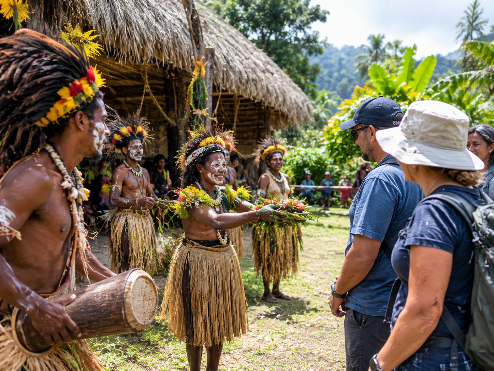
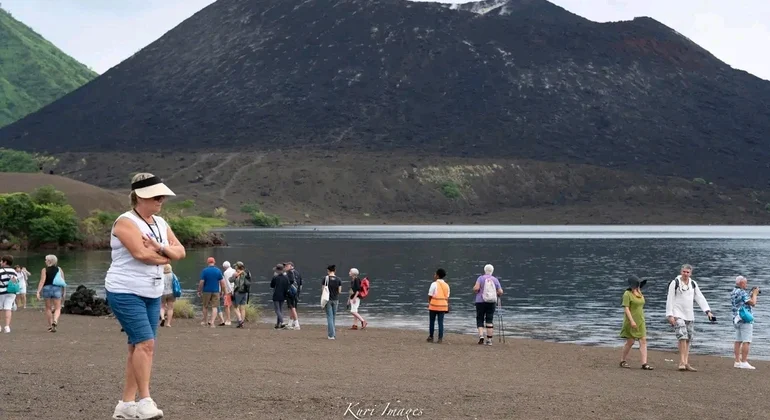
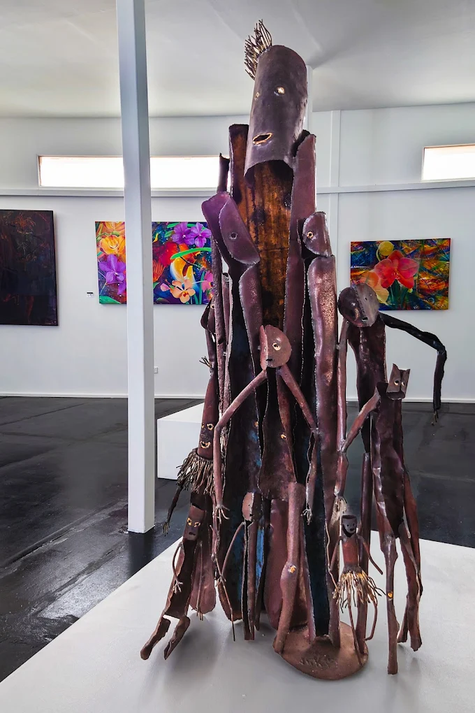
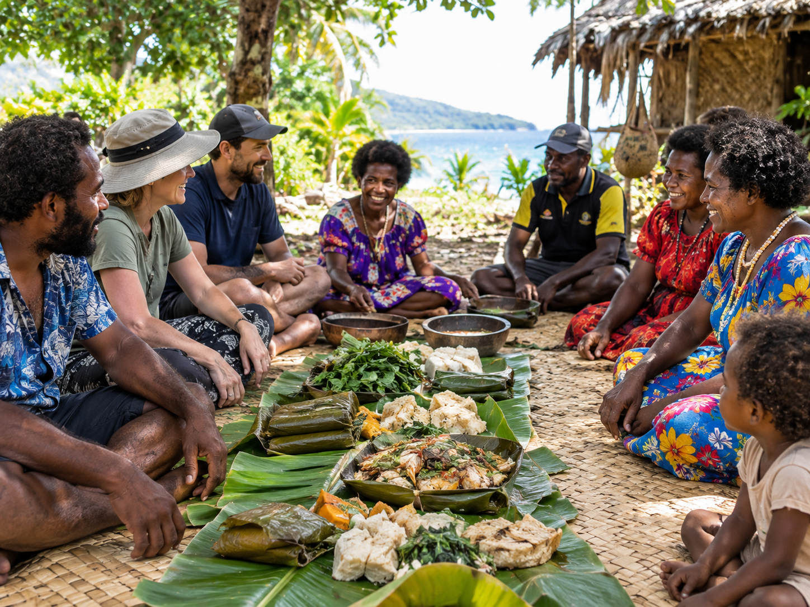
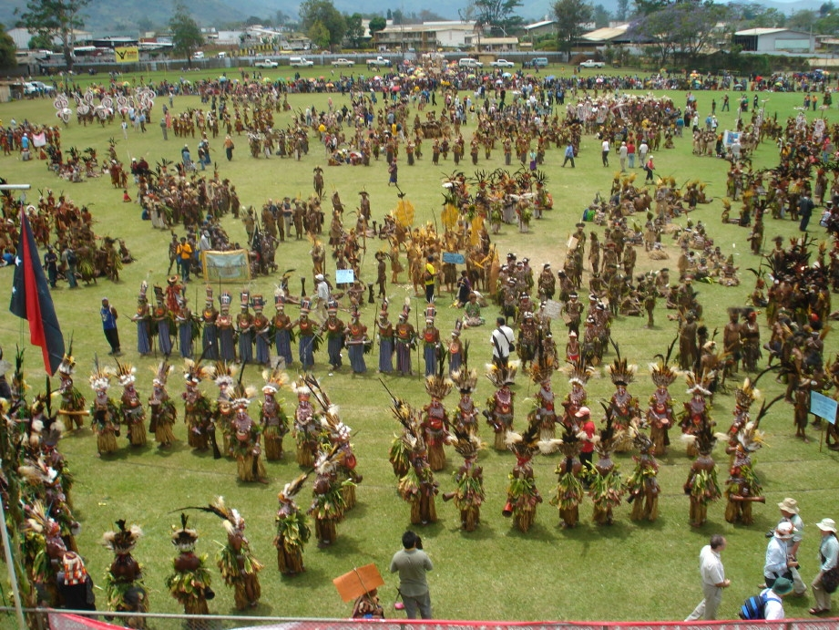
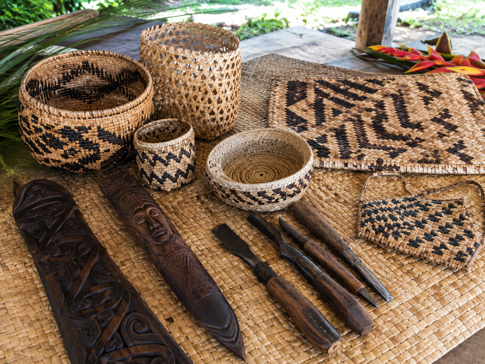

Gallery
Moments from recent tours and community partnerships. All images are used with permission and represent real experiences offered by Pacific Heritage Tours.
Photo gallery






About the images
Photographs are taken with the consent of participants and communities. They illustrate the scale and character of our experiences: small groups, outdoor settings, and direct engagement with local knowledge holders.
Images in this gallery represent cultural tourism experiences in Papua New Guinea, including village welcomes, coastal walks, traditional crafts, community meals and storytelling.